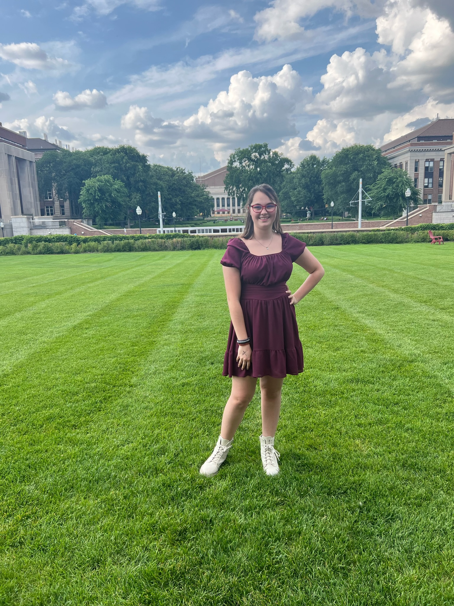
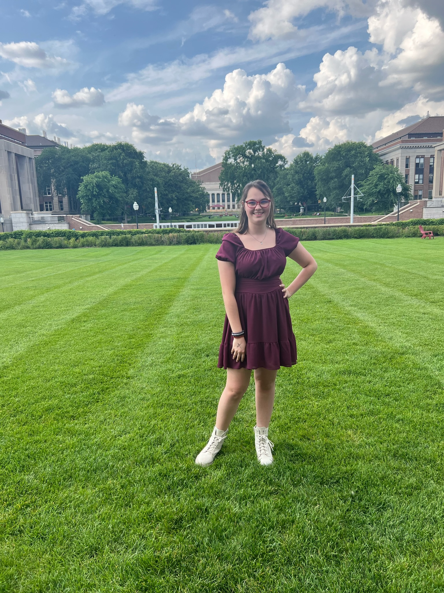

this is filler text so that the other paragraph doesn't show up kjgarjka aglkrjhaoiehw a;bojeapr oavjrp a;bjgar aobjagp porbjae poab jajvpa povuja pf abvdpfoj ;aovfidp apbojgap apovjra pj vsfkj paovupo auvbjo[ j aojvbagrwp argjo[ aorgjo oaj rgpoaurjg oiar v apogjv aprbj aporauj
-How it started-
I entered the world of design in a truly unexpected way -- through newspaper design my freshman year of high school.
In the words of Gary Metzker, print designers make the best digital designers. My four years being part of The Oriole newspaper and the work I'm doing as a designer at The Northwest Missourian has given me many of the skills necessary to learn how to design a website. When I started designing newspaper pages as a freshman, never realized that my passion would lead me towards graphic design, and eventually web design wher I am now.
Through my continued studies at Northwest Missouri State and work as the Design Editor at the Missourian, I hope to continue learning more about design and grow my abilities as a web designer.
I am a skilled and passionate graphic designer specializing in web design.